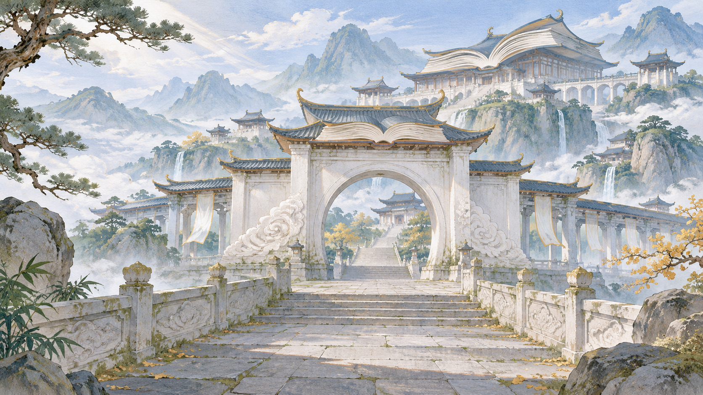

雲闕道門 · 太虛清修
太虛天闕
讀眼前一卷，問心中未明。
在雲闕之間，以藏經、觀雲與論道相互印證。
山門風格：白石／雲闕／卷冊三位同門 · 六段短章原功法、坊市與守護獸入口保留
本稿先審太虛；其餘四宗沿既有宗印供比較，山門主圖於太虛風格接受後擴製。正式拜入仍須顯示當前資格、利益與限制，送出原 join_sect 命令。

讀眼前一卷，問心中未明。
在雲闕之間，以藏經、觀雲與論道相互印證。
本稿先審太虛；其餘四宗沿既有宗印供比較，山門主圖於太虛風格接受後擴製。正式拜入仍須顯示當前資格、利益與限制，送出原 join_sect 命令。
初識 · 好感 0／100（示意）
此處僅顯示本次審閱點選；重新開啟頁面即清空。正式版須讀權威 View 的最近四筆與歷世回憶。
尚未試閱選項。可到「同門」比較 A／B 與婉拒後的回應。
山門與同門卷沿遊戲既有橫式閱讀布局。